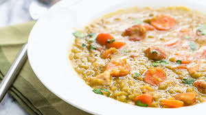

Smoked Bones Bean soup

The Smoked bones bean soup is a tasteful dish that can be consdered as a confort food.
Made with the leftovers of the pork butchery that were previously smoked to enhance its flavors.
The bones brings all the substance needed to this soup to make it absolutely delicious! And the beans give all the proteins to make it a well-balanced meal
To make this soup we'll need the following ingredients:
- Smoked Pork Bones
- Any type of bean that you have (white bean, lentils, whole peas)
- Garlic
- 1 Onion
- Enough Water to make Soupy
Steps:
- Throw the beans into the water at medium heat for about an hour until they get soft
- Remove the water of the Beans and rinse them under the tap
- Fill the pot with the beans and add salt
- Chop the Onion and three garlic cloves and add them to the pot
- When the water starts boiling again throw in the Smoked bones and let it as it for about another hour
- Now you can enjoy of your delicious bean soup